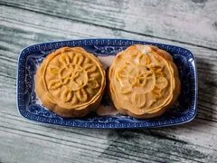
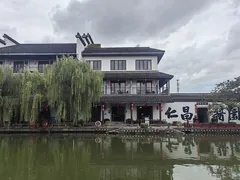
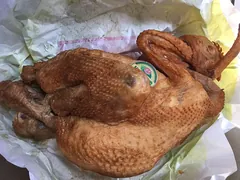

太守寻非遗 · 资料
非遗美食
国家级非物质文化遗产代表性项目名录里的饮食类项目 71 项、167 子项，按省份排列，共 30 个省级行政区，另有中直单位申报的 1 子项。数据来自中国非物质文化遗产网。
北京市
17 子项
河北省
6 子项
山西省
12 子项

图：淺藍雪 / CC BY-SA 3.0 / 维基共享资源。本站已缩放裁切，按 CC BY-SA 3.0 同样许可共享。 
图：Daniela Eftimova / CC BY-SA 4.0 / 维基共享资源。本站已缩放裁切，按 CC BY-SA 4.0 同样许可共享。
内蒙古自治区
2 子项

图：W457137120 / CC BY-SA 4.0 / 维基共享资源。本站已缩放裁切，按 CC BY-SA 4.0 同样许可共享。
上海市
5 子项

图：Yumeto / CC BY-SA 4.0 / 维基共享资源。本站已缩放裁切，按 CC BY-SA 4.0 同样许可共享。
江苏省
9 子项
浙江省
13 子项
安徽省
8 子项
福建省
9 子项
山东省
7 子项

图：Cartonfox / CC0 / 维基共享资源。本站已缩放裁切。 
图：N509FZ / CC BY-SA 4.0 / 维基共享资源。本站已缩放裁切，按 CC BY-SA 4.0 同样许可共享。
广东省
5 子项

图：无法识别作者。根据版权声明推断作者为TangHon~commonswiki。 / CC BY-SA 2.5 / 维基共享资源。本站已缩放裁切，按 CC BY-SA 2.5 同样许可共享。 图：Daniela Eftimova / CC BY-SA 4.0 / 维基共享资源。本站已缩放裁切，按 CC BY-SA 4.0 同样许可共享。
四川省
13 子项

图：Alessandro Martini / CC0 / 维基共享资源。本站已缩放裁切。 图：Yumeto / CC BY-SA 4.0 / 维基共享资源。本站已缩放裁切，按 CC BY-SA 4.0 同样许可共享。
贵州省
5 子项
云南省
8 子项

图：瑞丽江的河水 / CC BY-SA 4.0 / 维基共享资源。本站已缩放裁切，按 CC BY-SA 4.0 同样许可共享。 图：瑞丽江的河水 / CC BY-SA 4.0 / 维基共享资源。本站已缩放裁切，按 CC BY-SA 4.0 同样许可共享。
甘肃省
1 子项
香港
1 子项
图：无法识别作者。根据版权声明推断作者为TangHon~commonswiki。 / CC BY-SA 2.5 / 维基共享资源。本站已缩放裁切，按 CC BY-SA 2.5 同样许可共享。
澳门
2 子项
图：无法识别作者。根据版权声明推断作者为TangHon~commonswiki。 / CC BY-SA 2.5 / 维基共享资源。本站已缩放裁切，按 CC BY-SA 2.5 同样许可共享。
中直单位
1 子项